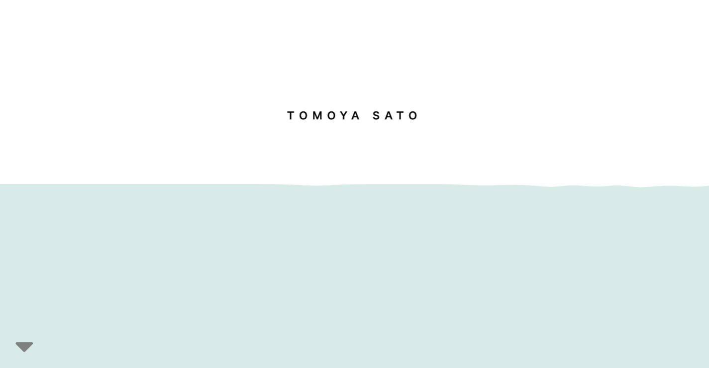
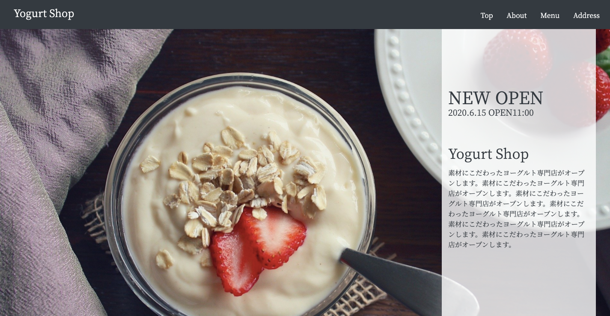

<!DOCTYPE html>
<html lang="ja">
  <head>
    <meta charset="UTF-8">
    <meta name="viewport" content="width=device-width, initial-scale=1.0">

    <!-- FontAwesome -->
    <link href="https://use.fontawesome.com/releases/v5.13.0/css/all.css" rel="stylesheet">
    <!-- css -->
    <link rel="stylesheet" href="css/reset.css">
    <link rel="stylesheet" href="css/style.css">
    <link rel="stylesheet" href="css/responsive.css">
    <link rel="stylesheet" href="css/animation.css">
    <!-- jQuery -->
    <script src="https://ajax.googleapis.com/ajax/libs/jquery/3.3.1/jquery.min.js"></script>
    <!-- jQuery UI -->
    <script src="https://ajax.googleapis.com/ajax/libs/jqueryui/1.12.1/jquery-ui.min.js"></script>
    <link rel="stylesheet" href="https://ajax.googleapis.com/ajax/libs/jqueryui/1.12.1/themes/smoothness/jquery-ui.css">
    <script src="js/raindrops.js"></script>
    <!-- slick -->
    <link rel="stylesheet" type="text/css" href="https://cdnjs.cloudflare.com/ajax/libs/slick-carousel/1.9.0/slick.min.css"/>
    <script type="text/javascript" src="https://cdnjs.cloudflare.com/ajax/libs/slick-carousel/1.9.0/slick.min.js"></script>
    
    <title>TOMOYA SATO</title>
  </head>
  <body class="selecter">

      <!-- ローディング画面 -->
      <div id="loading">
        <div class="breeding-rhombus-spinner">
          <div class="rhombus child-1"></div>
          <div class="rhombus child-2"></div>
          <div class="rhombus child-3"></div>
          <div class="rhombus child-4"></div>
          <div class="rhombus child-5"></div>
          <div class="rhombus child-6"></div>
          <div class="rhombus child-7"></div>
          <div class="rhombus child-8"></div>
          <div class="rhombus big"></div>
        </div>
      </div>


    <header>
      <!-- 左上の目次メニュー -->
      <ul class="nav1 fadein2">
        <li><a class="scroll1" href="">こだわり</a></li>
        <li><a class="scroll2" href="">デザイナーについて</a></li>
        <li><a class="scroll3" href="">できること</a></li>
        <li><a class="scroll4" href="">お問い合わせ</a></li>
      </ul>
      
      <!-- レスポンシブの左上メニュー -->
      <button class="gmenu" type="button">
        <span class="top"></span>
        <span class="btm"></span>
      </button>

      <div class="gnav">
        <ul class="gnav-list">
          <li class="scrollTop" style="transition-delay: 0.8s"><a href="#"><span>トップ</span></a></li>
          <li class="scroll1" style="transition-delay: 0.9s"><a href="#"><span>こだわり</span></a></li>
          <li class="scroll2" style="transition-delay: 1s"><a href="#"><span>デザイナーについて</span></a></li>
          <li class="scroll3" style="transition-delay: 1.1s"><a href="#"><span>できること</span></a></li>
          <li class="scroll4" style="transition-delay: 1.2s"><a href="#"><span>お問い合わせ</span></a></li>
        </ul>
      </div>

      <!-- タイトル -->
      <h4 class="fadeout">TOMOYA SATO</h4>
      <div class="down fadeout scrollDown"><i class="fas fa-caret-down"></i></div>
      <!-- 右メニュー -->
      <ul class="nav2 fadein2">
        <li><a class="scrollTop" href="">TOMOYA SATO</a></li>
        <li><a href="#" class="js-modal-open2">CONTACT</a></li>
        <li><a href="#" class="js-modal-open3">WORK</a></li>
        <li><a href="#" class="js-modal-open1">ME</a></li>
      </ul>
      <div class="center" id="example6"></div>
      <div class="light-blue"></div>
      <!-- 右メニューモーダル ME -->
      <div class="modal js-modal1">
        <div class="modal__bg js-modal-close1">
          <a class="js-modal-close1 close" href="">×</a>
          <h4>TOMOYA SATO</h4>
        </div>
        <div class="center2 example5"></div>
        <div class="modal__content modal-me">
          <div class="modal-main-left">
            <table>
              <tr>
                <td class="year">1998</td>
                <td>BORN IN TOCHIGI, JAPAN</td>
              </tr>
              <tr>
                <td class="year">2004</td>
                <td>ENTERED NISHIHARA ES.</td>
              </tr>
              <tr>
                <td class="year">2010</td>
                <td>ENTERED OTAWARA JS.</td>
              </tr>
              <tr>
                <td class="year">2013</td>
                <td>ENTERED OTAWARA HS.</td>
              </tr>
              <tr>
                <td class="year">2016</td>
                <td>ENTERED TOHOKU UNIV.</td>
              </tr>
            </table>
          </div>
          <div class="modal-main-right">
            <p>A WEB DESIGNER</p>
            <p>トモヤ・サトウ</p>
            <p>栃木県大田原市生まれ。東北大学工学部電気情報物理工学科卒業見込み。自分の作ったサービスを世の中に発信することに魅力を感じ、プログラミングの世界へ飛び込む。起業アイデア模索中。</p>
          </div>
        </div>
      </div>

      <!-- 右メニューモーダル CONTACT -->
      <div class="modal js-modal2">
        <div class="modal__bg js-modal-close2">
          <a class="js-modal-close2 close" href="">×</a>
          <h4>TOMOYA SATO</h4>
        </div>
        <div class="center2 example5"></div>
        <div class="modal__content contact">
          <p>KEEP IN TOUCH !</p>
          <a class="email" href="mailto:tomoya.sato.contact@gmail.com"><span>Mail:</span> tomoya.sato.contact[at]gmail.com</a>
        </div>
      </div>

      <!-- 右メニューモーダル WORK -->
      <div class="modal js-modal3">

        <!-- 背景 -->
        <div class="modal__bg js-modal-close3">
          <a class="js-modal-close3 close" href="">×</a>
        </div>

        <!-- スライド -->
        <div class="slide-area">
          <ul class="slider slick01" id="mainSlide">
            <li>
              <a href="#"></a>
            </li>
            <li>
              <a href="#"></a>
            </li>
            <li>
              <a href="#"></a>
            </li>
          </ul>
          <ul class="slider slick02">
            <li>
              <a href="#"></a>
            </li>
            <li>
              <a href="#"></a>
            </li>
            <li>
              <a href="#"></a>
            </li>
          </ul>
        </div>
        <div id="arrows">
          <div class="prev slick-prev"><i class="fas fa-chevron-left"></i></div>
          <div class="next slick-next"><i class="fas fa-chevron-right"></i></div>
        </div>

        <!-- 下半分 -->
        <div class="center2 example5"></div>
        <div class="modal__content work">
          <ul class="slider slick03">
            <li>
              <p>こちらは、私のポートフォリオサイトです。</p>
              <p>シンプルなデザインを意識し、中央の波打つアニメーションで印象に残るデザインにしました。また、色のトーンを統一することで、落ち着いた雰囲気を演出しています。</p>
              <a href="http://satomomo.com/" target="_blank">TOMOYA SATO</a>
            </li>
            <li>
              <p>こちらは、株式会社YogurtShop(架空の会社)のオープニングLPです。</p>
              <p>お洒落でヨーロピアンな雰囲気のお店をイメージできるようなデザインを意識しました。グレーを基調に、背景を白ではなく、青みがかった白を用いることで、きれいにまとめています。</p>
              <a href="https://satomomo0222.github.io/yogurt-shop/" target="_blank">Yogurt Shop</a>
            </li>
            <li>
              <p>こちらは、株式会社YogurtShop(架空の会社)のオープニングLPです。</p>
              <p>お洒落でヨーロピアンな雰囲気のお店をイメージできるようなデザインを意識しました。グレーを基調に、背景を白ではなく、青みがかった白を用いることで、きれいにまとめています。</p>
              <a href="https://satomomo0222.github.io/yogurt-shop/" target="_blank">Yogurt Shop</a>
            </li>
          </ul>
        </div>

      </div>
    </header>

    <!-- メインセクション -->
    <main>
      <section class="fadein section1">
          <h2><span>「こだわり」</span>を伝える。</h2>
          <p>"素晴らしいWEBサイト"とは、<br>細部まで作り込まれたモノでも、<br>目まぐるしく動くモノでもなく、<br>伝えたいことが伝わるモノ。<br><br>徹底した双方のコミュニケーションのもと、本当に伝えたいこと、<br><br>「こだわり」を伝えます。</p>
      </section>

      <section class="fadein">
          <h2><span>「目的」</span>を見据える。</h2>
          <p>WEB制作はあくまで手段でしかなく、本質はその先の目的を達成すること。<br><br>認知度をあげたいのか、購入率をあげたいのか、信頼に足ることを示したいのか。それぞれの目的に適切なWEBサイトが必ずあります。<br><br>それを見極め、本当に成し遂げたいことを達成するお手伝いをします。</p>
      </section>


      <section class="fadein section2">
        <h1>デザイナーについて</h1>
        <table>
          <tr>
            <td>Name </td>
            <td>TOMOYA SATO</td>
          </tr>
          <tr>
            <td>Job </td>
            <td>Web Designer</td>
          </tr>
          <tr>
            <td>Mail </td>
            <td>tomoya.sato.contact[at]gmail.com</td>
          </tr>
          <tr>
            <td>Site </td>
            <td></td>
          </tr>
        </table>
      </section>

      <section class="fadein section3">
        <h1>WEBサイトの提案、制作全般</h1>
        <p>お店のホームページサイトや、デザイン性の高いブランドサイト、インタラクティブなキャンペーンサイトなど、徹底したヒアリングのもと、様々な要望にお応えします。</p>
      </section>

      <section class="fadein">
        <h1>既存のWEBサイトの修正</h1>
        <p>「作ってもらったけど、部分的に修正したい」<br>「新しい画像を取り入れたい」<br><br>どんな些細なことでも、お気軽にご相談ください。</p>
      </section>

      <section class="fadein section4">
        <h1>お問い合わせ</h1>
        <p>Mail： tomoya.sato.contact[at]gmail.com</p>
      </section>
    </main>


    <!-- フッター -->
    <footer class="scrollTop">
      <div><i class="fas fa-sort-up bounce"></i></div>
      <p>PAGE TOP</p>
    </footer>
    


    <script src="js/script.js"></script>

  </body>
</html>